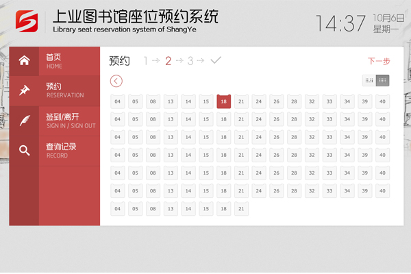
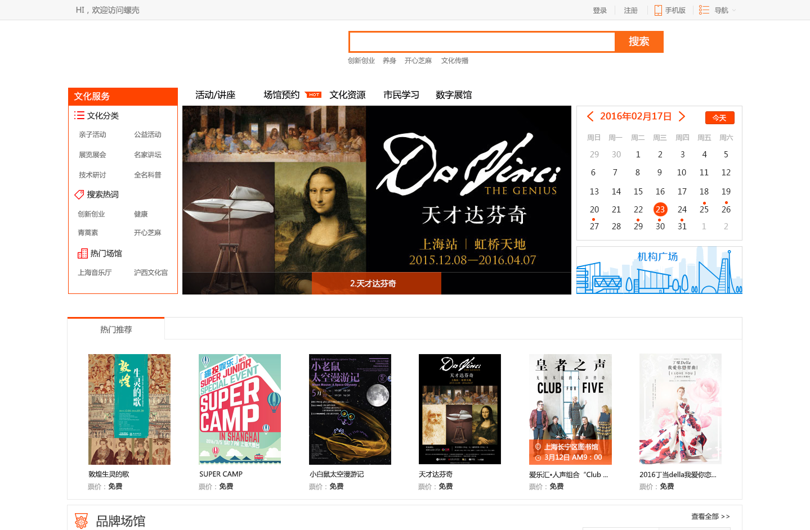
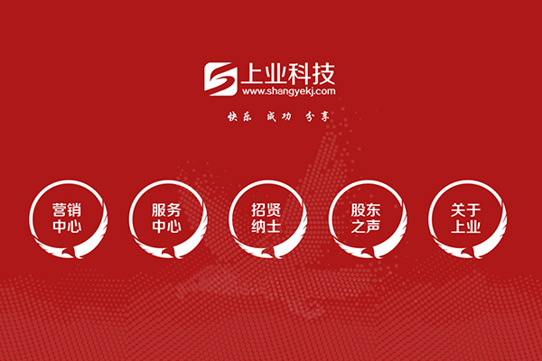
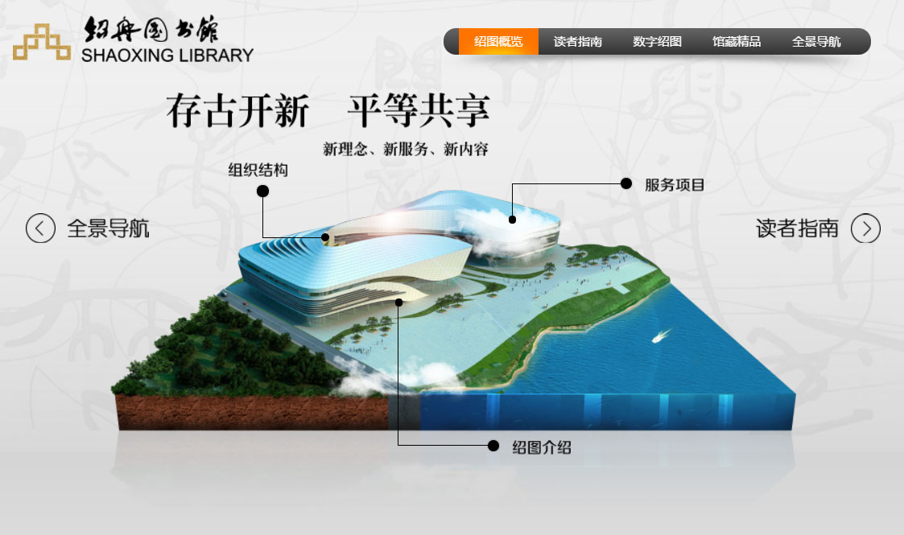
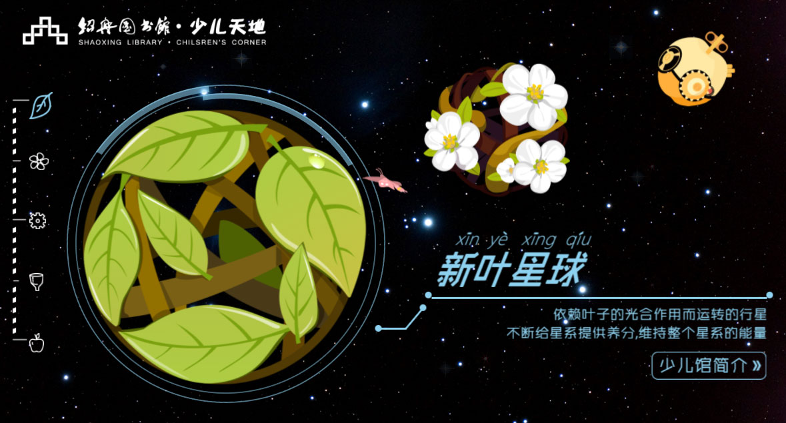
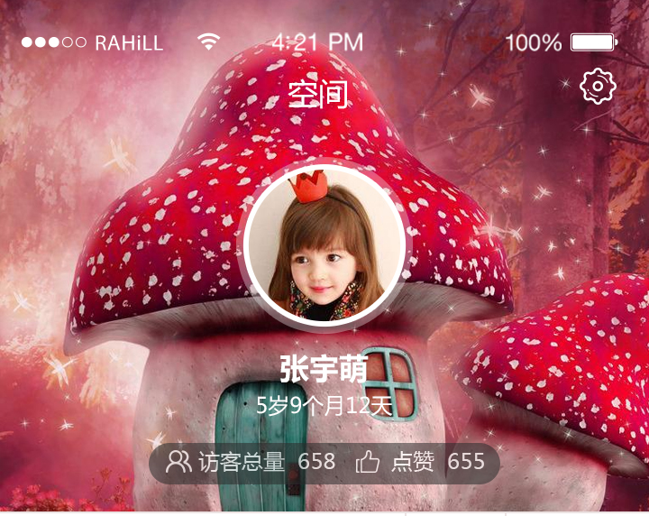
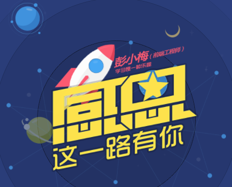

我的项目

新版V2.0占座前台
预约终端：包括PC、智能手机、触摸终端、微信终端
统一身份认证系统
技术栈:javascript、less/sass、Bootstrap、css3等。

螺壳-机构文化云
文化服务云平台,运用先进的云计算技术来实现市民即时、实现集文化传播、交流互动为一体等数字文化服务
技术栈:javascript、less/sass、Bootstrap、css3等

门户网站
公司整套门户网站和整套产品宣传页
技术栈：javascript、bootstrap、less/sass、html5、css3动画、font等
多媒体库
多媒体学习库，整套图书馆学习资源
技术栈:javascript、less/sass、Bootstrap、css3、font等

移动端App
技术栈:Vue、Mint-UI、javascript、webpack、Express、less/sass等，模块化。
移动端商户信息，类似大众点评，与另一个开源项目sellerAdmin商家后台管理相互协作 .

绍兴少儿图书馆-桌面版
绍兴少儿图书馆-桌面版
技术栈：1.VR 360全景,2.CSS3 , 3.JAVASCRIPT

绍兴少儿图书馆-星球版
针对绍兴少儿图书馆驻场开发的【触摸屏】门户展示
技术栈:JS+css3+Html5

V校园
V校园,一款专业移动儿童管理软件，为幼儿园提供考勤、流程审核、活动管理等等。
技术栈：1.HTML5 ,2.CSS3 , 3.JAVASCRIPT 4.JQUERY

美食APP
小型时代食品商城APP--【类似饿了么 美团 】
技术栈：angular+ionic
我的小游戏

微信H5游戏&打怪游戏
微信H5游戏 , 技术栈：1.HTML5 , 2.CSS3 , 3.JAVASCRIPT , 4.JQUERY , 5.canvas 用了H5新标签canvas和JS完美结合。